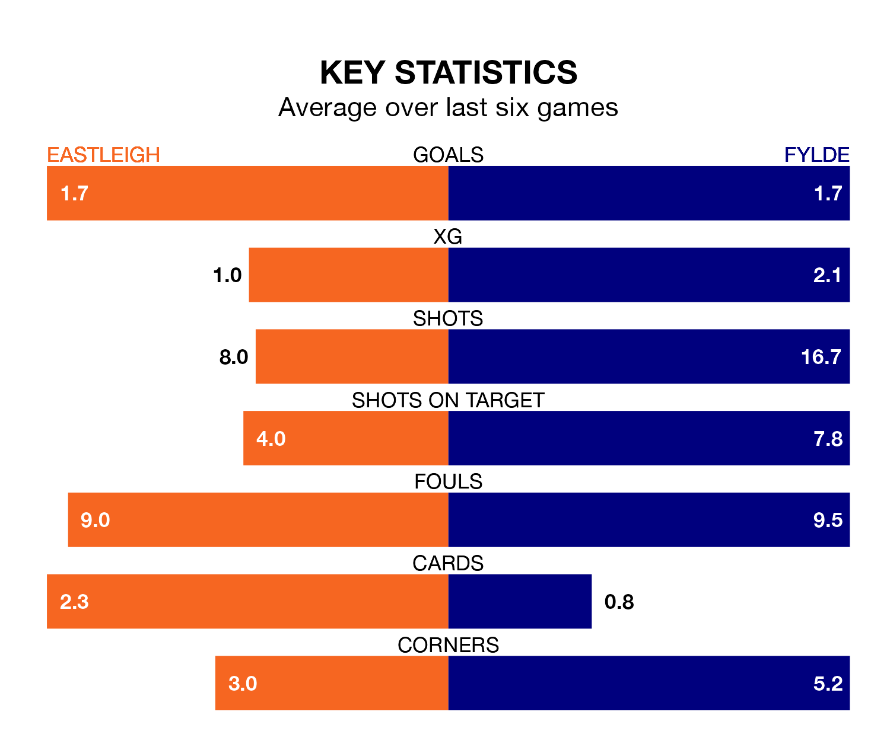

Struggling Fylde face Eastleigh away at the Silverlake Stadium on Saturday looking to build on a win in their last league outing.
After securing all three points with a 3-1 victory over Dorking Wanderers on February 3, the Coasters sit 21st in the National League.
They travel to play an Eastleigh side 14th in the standings, who were held in their last match, 1-1 against Gateshead, on Tuesday.
With 52 goals in 31 games so far this season, Eastleigh are scoring more than average in the league with 1.7 goals per game. But they are conceding more than average too, letting in 62 goals at a rate of 2.0 per game.
Fylde, meanwhile, are average scorers, with 1.5 goals per game. They have conceded 1.8 goals per game.
The Spitfires are in bad form in the National League, with no wins and three draws from their last six games.
With four wins and a draw over that period, the Coasters's form is much better – they have taken 13 points from 18, compared to the home team's three.
In the last 10 years, Eastleigh and Fylde have played each other on seven occasions. Eastleigh won one of them, Fylde two, and they drew four times.
On average, the Spitfires scored 1.6 goals and the Coasters 2.0 in those matches.
Their last meeting was on September 16, when Eastleigh won 2-1 away.
Updated: 11:43 (UTC), 08/02/24